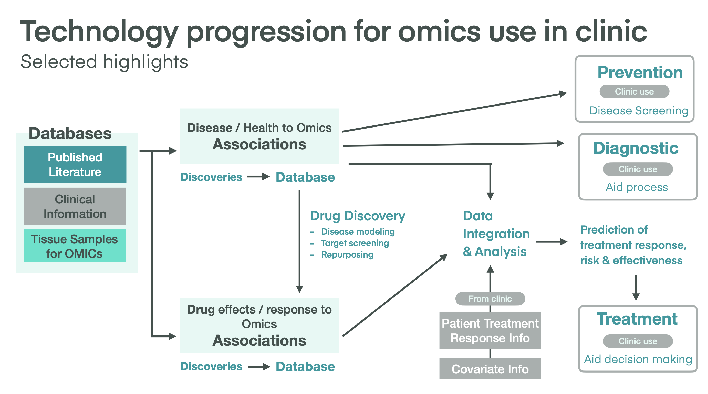

Multi-Omics Clinical Reporting with Rmarkdown


Figure 1: snpReportR: A Method for RNAseq Variant Detection Reporting
Figure 1: snpReportR: A Method for RNAseq Variant Detection Reporting
This section provides information on the patient and their relevant clinical information.
this is a subtitle.
Need to provide a table here.
| Information | Value |
|---|---|
| Name: | Jane Doe |
| DOB: | 01/01/1900 |
| Sex: | F |
| Genetic Tests: | RNA, DNA, and TCR sequencing |
All data is protected under HIPAA and . This report (poster but trying to use the css and html for this to learn how to make my own templates) was created via the R package pagedown.
Genetic testing was carried out using RNA-sequencing, DNA-sequencing, and TCR sequencing. These data were used to determine the expressed variants for single nucleotide variants (SNVs) and single nucleotide polymorphisms (SNPs) by transcriptomics, and also allowed one to determine both somatic and germline variants using DNA. In addition, large chromosomal rearrangment, called structural variants (SVs), were identifed using [DNA or RNA?] sequencing. Finally, TCR sequencing allows one to investigate how immune system/inflammation maybe affected due to disease or other underlying conditions.

The genetic testing results are compiled and the report is produced with OmicsReportR
| Testing.Methodolgy | Description |
|---|---|
| DNA-seq: | DNA |
| RNA-seq: | RNA |
| TCR-seq: | T-Cell Receptor sequencing |
Genetic testing was carried out using RNA-sequencing, DNA-sequencing, and TCR sequencing. These data were used to determine the expressed variants for single nucleotide variants (SNVs) and single nucleotide polymorphisms (SNPs) by transcriptomics, and also allowed one to determine both somatic and germline variants using DNA. In addition, large chromosomal rearrangment, called structural variants (SVs), were identifed using [DNA or RNA?] sequencing. Finally, TCR sequencing allows one to investigate how immune system/inflammation maybe affected due to disease or other underlying conditions.
Genetic testing was carried out using RNA-sequencing, DNA-sequencing, and TCR sequencing. These data were used to determine the expressed variants for single nucleotide variants (SNVs) and single nucleotide polymorphisms (SNPs) by transcriptomics, and also allowed one to determine both somatic and germline variants using DNA. In addition, large chromosomal rearrangment, called structural variants (SVs), were identifed using [DNA or RNA?] sequencing. Finally, TCR sequencing allows one to investigate how immune system/inflammation maybe affected due to disease or other underlying conditions.
Genetic testing was carried out using RNA-sequencing, DNA-sequencing, and TCR sequencing. These data were used to determine the expressed variants for single nucleotide variants (SNVs) and single nucleotide polymorphisms (SNPs) by transcriptomics, and also allowed one to determine both somatic and germline variants using DNA. In addition, large chromosomal rearrangment, called structural variants (SVs), were identifed using [DNA or RNA?] sequencing. Finally, TCR sequencing allows one to investigate how immune system/inflammation maybe affected due to disease or other underlying conditions.
Genetic testing was carried out using RNA-sequencing, DNA-sequencing, and TCR sequencing. These data were used to determine the expressed variants for single nucleotide variants (SNVs) and single nucleotide polymorphisms (SNPs) by transcriptomics, and also allowed one to determine both somatic and germline variants using DNA. In addition, large chromosomal rearrangment, called structural variants (SVs), were identifed using [DNA or RNA?] sequencing. Finally, TCR sequencing allows one to investigate how immune system/inflammation maybe affected due to disease or other underlying conditions.
Genetic testing was carried out using RNA-sequencing, DNA-sequencing, and TCR sequencing. These data were used to determine the expressed variants for single nucleotide variants (SNVs) and single nucleotide polymorphisms (SNPs) by transcriptomics, and also allowed one to determine both somatic and germline variants using DNA. In addition, large chromosomal rearrangment, called structural variants (SVs), were identifed using [DNA or RNA?] sequencing. Finally, TCR sequencing allows one to investigate how immune system/inflammation maybe affected due to disease or other underlying conditions.
Genetic testing was carried out using RNA-sequencing, DNA-sequencing, and TCR sequencing. These data were used to determine the expressed variants for single nucleotide variants (SNVs) and single nucleotide polymorphisms (SNPs) by transcriptomics, and also allowed one to determine both somatic and germline variants using DNA. In addition, large chromosomal rearrangment, called structural variants (SVs), were identifed using [DNA or RNA?] sequencing. Finally, TCR sequencing allows one to investigate how immune system/inflammation maybe affected due to disease or other underlying conditions.
Genetic testing was carried out using RNA-sequencing, DNA-sequencing, and TCR sequencing. These data were used to determine the expressed variants for single nucleotide variants (SNVs) and single nucleotide polymorphisms (SNPs) by transcriptomics, and also allowed one to determine both somatic and germline variants using DNA. In addition, large chromosomal rearrangment, called structural variants (SVs), were identifed using [DNA or RNA?] sequencing. Finally, TCR sequencing allows one to investigate how immune system/inflammation maybe affected due to disease or other underlying conditions.
# some nice R code here
1 + 1
fit = lm(dist ~ speed, cars)Genetic testing was carried out using RNA-sequencing, DNA-sequencing, and TCR sequencing. These data were used to determine the expressed variants for single nucleotide variants (SNVs) and single nucleotide polymorphisms (SNPs) by transcriptomics, and also allowed one to determine both somatic and germline variants using DNA. In addition, large chromosomal rearrangment, called structural variants (SVs), were identifed using [DNA or RNA?] sequencing. Finally, TCR sequencing allows one to investigate how immune system/inflammation maybe affected due to disease or other underlying conditions.

The most well-known feature of xaringan: the random Moustache Karl (aka yolo = TRUE).
Genetic testing was carried out using RNA-sequencing, DNA-sequencing, and TCR sequencing. These data were used to determine the expressed variants for single nucleotide variants (SNVs) and single nucleotide polymorphisms (SNPs) by transcriptomics, and also allowed one to determine both somatic and germline variants using DNA. In addition, large chromosomal rearrangment, called structural variants (SVs), were identifed using [DNA or RNA?] sequencing. Finally, TCR sequencing allows one to investigate how immune system/inflammation maybe affected due to disease or other underlying conditions.
\[\bar{X}=\frac{1}{n}\sum_{i=1}^nX_i\]
Genetic testing was carried out using RNA-sequencing, DNA-sequencing, and TCR sequencing. These data were used to determine the expressed variants for single nucleotide variants (SNVs) and single nucleotide polymorphisms (SNPs) by transcriptomics, and also allowed one to determine both somatic and germline variants using DNA. In addition, large chromosomal rearrangment, called structural variants (SVs), were identifed using [DNA or RNA?] sequencing. Finally, TCR sequencing allows one to investigate how immune system/inflammation maybe affected due to disease or other underlying conditions.